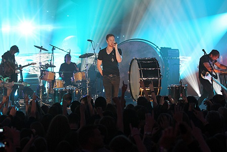

Imagine Dragons

Obecni członkowie:
- Ben McKee
- Dan Reynolds
- Wayne Sermon
- Dan Platzman
Byli członkowie:
- Andrew Tolman
- Brittany Tolman
- Theresa Flaminio
- Dave Lemke
Minialbumy
| Rok | Nazwa Albumu |
|---|---|
| 2009 | Imagine Dragons |
| 2010 | Hell and Silence |
| 2011 | It's Time |
| 2012 | Continued Silence |
| 2012 | Continued Silence |
| 2013 | The Archive |
| 2013 | iTunes Session |

Formowanie kapeli i wczesna praca
Dan Reynolds poznał gitarzystę Wayne'a Sermona w 2008 r. w Utah, gdzie Dan chodził do szkoły, a Wayne mieszkał po skończeniu szkoły muzycznej. Skład kapeli został uformowany w Las Vegas. W skład kapeli wchodzili Dan Reynolds, Wayne Sermon, Ben McKee, Andrew Tolman i Brittany Tolman. Członkowie kapeli żyli razem w Las Vegas, gdzie nagrali i wydali swoje pierwsze trzy EP-ki.Kapela wydała dwa EP-ki zatytułowane Imagine Dragons EP i Hell and Silence EP w 2010 r. Oba zostały nagrane w Battle Born Studios. W roku 2011 powrócili do tego studia i nagrali kolejny EP pod tytułem Its Time.